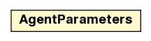

jason.mas2j
Class AgentParameters

java.lang.Object
 jason.mas2j.AgentParameters
jason.mas2j.AgentParameters
public class AgentParameters
- extends java.lang.Object
represents the agent declaration in the MAS2J project file.
The project parser creates this object while parsing.
| Methods inherited from class java.lang.Object |
clone, equals, finalize, getClass, hashCode, notify, notifyAll, wait, wait, wait |
name
public java.lang.String name
asSource
public java.io.File asSource
agClass
public ClassParameters agClass
bbClass
public ClassParameters bbClass
archClass
public ClassParameters archClass
qty
public int qty
AgentParameters
public AgentParameters()
toString
public java.lang.String toString()
- Overrides:
toString in class java.lang.Object
setupDefault
public void setupDefault()
fixSrc
public boolean fixSrc(java.util.List<java.lang.String> srcpath,
java.lang.String urlPrefix)
- fix source of the asl code based on aslsourcepath, also considers code from a jar file (if urlPrefix is not null)
getBBClass
public ClassParameters getBBClass()
setHost
public void setHost(java.lang.String h)
getHost
public java.lang.String getHost()
setAgClass
public void setAgClass(java.lang.String c)
setArchClass
public void setArchClass(java.lang.String c)
setArchClass
public void setArchClass(ClassParameters c)
setBB
public void setBB(ClassParameters c)
setOptions
public void setOptions(java.util.Map<java.lang.String,java.lang.String> m)
addOption
public void addOption(java.lang.String k,
java.lang.String vl)
getOptions
public java.util.Map<java.lang.String,java.lang.String> getOptions()
getAsInMASProject
public java.lang.String getAsInMASProject()
getAsSetts
public Settings getAsSetts(boolean debug,
boolean forceSync)
getAgName
public java.lang.String getAgName()